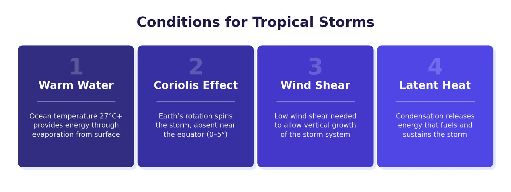

Global Atmospheric Circulation
The global atmospheric circulation model explains how air moves around the Earth. It determines patterns of weather and climate, including where deserts, rainforests and temperate regions are found. Understanding this model is essential for explaining why tropical storms form where they do.
Air Pressure
Air pressure is the weight of air pushing down on the Earth’s surface, measured in millibars (mb). It is not equal everywhere. Areas with more than 1000 mb are classed as high pressure, and areas with less than 1000 mb are low pressure. Air always moves from high to low pressure — this movement is what creates wind.
Low pressure areas have rising air, which cools and condenses to form clouds and rain. High pressure areas have sinking air, which warms as it descends and produces clear, dry weather.

The Three Circulation Cells
The atmosphere is divided into three circulation cells in each hemisphere, creating six cells in total. Each cell is a loop of rising and sinking air:
- Hadley Cell — located between the equator and the tropics (around 30°N and 30°S). Air is heated intensely at the equator, rises (creating low pressure and heavy rainfall), moves towards the tropics at high altitude, cools, and sinks at around 30° (creating high pressure and dry conditions — this is why most deserts are found here).
- Ferrel Cell — located between the tropics (30°) and around 60° latitude. Air from the Hadley Cell sinks at the tropics and moves along the surface towards 60°, where it meets cold polar air and is forced to rise again (creating low pressure and rainfall). The UK sits near the edge of the Ferrel Cell, which is why we get frequent rain and unsettled weather.
- Polar Cell — located between around 60° and the poles. Cold, dense air sinks at the poles (creating high pressure and dry conditions) and moves along the surface towards 60°, where it meets warmer air and rises.
The pattern of alternating high and low pressure belts creates distinct climate zones: tropical rainforests at the equator (low pressure), deserts at the tropics (high pressure), temperate regions like the UK at around 50–60° (low pressure), and ice caps at the poles (high pressure).
The Coriolis Effect and Trade Winds
Because the Earth rotates, air does not travel in straight lines between pressure belts. Instead, it curves — to the right in the Northern Hemisphere and to the left in the Southern Hemisphere. This is called the Coriolis effect.
The Coriolis effect creates predictable wind patterns known as trade winds. Within the Hadley Cell, air returning to the equator along the surface is deflected to create the north-east and south-east trade winds. These trade winds draw enormous amounts of energy from the warm tropical oceans — energy that powers tropical storms.
Tropical Storms
A tropical storm is an intense rotating weather system that forms over warm tropical oceans. They are known by different names in different regions: hurricanes in North America and the Caribbean, typhoons in South-East Asia, and cyclones near Africa and Australia.
Distribution of Tropical Storms
Tropical storms follow a clear pattern in their distribution:
- They form between 5° and 30° north and south of the equator, within the Hadley Cell.
- They begin over warm oceans, typically on the western side of ocean basins.
- They track from east to west, curving away from the equator as they travel, usually hitting the east coast of continents near the tropics.
- They lose energy and weaken rapidly once they move over land, because the warm ocean is their energy source.
- In the Northern Hemisphere, the main season is June to November (summer and autumn). In the Southern Hemisphere, it is January to March.
Causes and Formation
Several conditions must be met for a tropical storm to form:
- Ocean temperature of at least 26.5°C — this is the minimum needed to provide enough energy through evaporation. This is why storms form in late summer, when the sea has had months to warm up.
- Deep warm water — the warmth must extend to at least 60–70 metres below the surface to sustain the storm.
- Location at least 5° from the equator — the Coriolis effect is too weak at the equator itself to spin the air into a storm.
Warm, moist air is heated above the ocean surface (at least 26.5°C) and begins to rise rapidly, creating an area of very low pressure. As it rises, it draws in more warm, moist air behind it, creating strong winds. The Coriolis effect causes this air to spin — anti-clockwise in the Northern Hemisphere, clockwise in the Southern. As the air continues to rise, it cools and condenses into towering cumulonimbus clouds, releasing torrential rain. Cool, dry air from the upper atmosphere sinks into the centre, creating a calm eye. The storm moves across the ocean, gaining energy from the warm water, until it reaches land where it loses its energy source and weakens.
Structure and Features of a Tropical Storm
A fully formed tropical storm has a distinctive structure:
- Eye — the calm centre of the storm, typically 16–32 km across. Cool, dry air sinks here, creating clear skies and light winds. People sometimes think the storm is over when the eye passes, but the other side of the storm follows immediately.
- Eyewall — the ring of cloud surrounding the eye. This is the most destructive part, with the fastest wind speeds (up to 300 km/h in severe storms) and the heaviest rainfall.
- Spiral rain bands — bands of cloud and rain that spiral outwards from the eyewall. They rotate anti-clockwise in the Northern Hemisphere and clockwise in the Southern Hemisphere.
- Overall size — a tropical storm can be 240–320 km across, with rain bands extending even further.
The Saffir-Simpson Scale
Tropical storms are classified using the Saffir-Simpson scale, which rates them from Category 1 (weakest, 119–153 km/h) to Category 5 (strongest, over 252 km/h). Higher categories bring faster winds, larger storm surges and more destruction. A storm only officially qualifies as a tropical storm once winds reach 119 km/h.
Hazards Created by Tropical Storms
Tropical storms create four main hazards:
- Damaging winds — high wind speeds destroy buildings, uproot trees, bring down power lines and turn loose objects into dangerous projectiles.
- Torrential rain — the heavy rainfall causes widespread flooding, especially inland.
- Storm surge — strong winds push the sea surface upwards, raising it by up to 5 metres or more. This wall of water floods coastal areas and is often the deadliest hazard — more people typically drown in the storm surge than are killed by the wind.
- Flooding — the combination of storm surge and heavy rain causes both coastal and inland flooding.
Climate change may affect tropical storms. Warmer oceans mean the sea reaches 26.5°C more often and in more locations, potentially creating more frequent and more intense storms. Storms may also form further from the equator than before, affecting areas that have not historically experienced them.